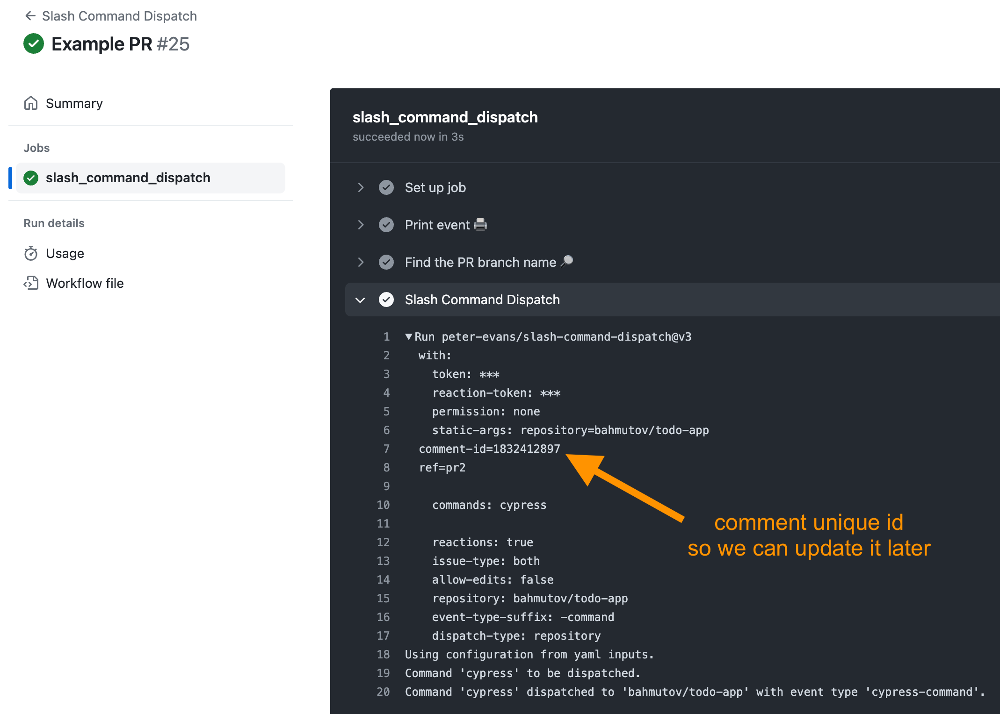
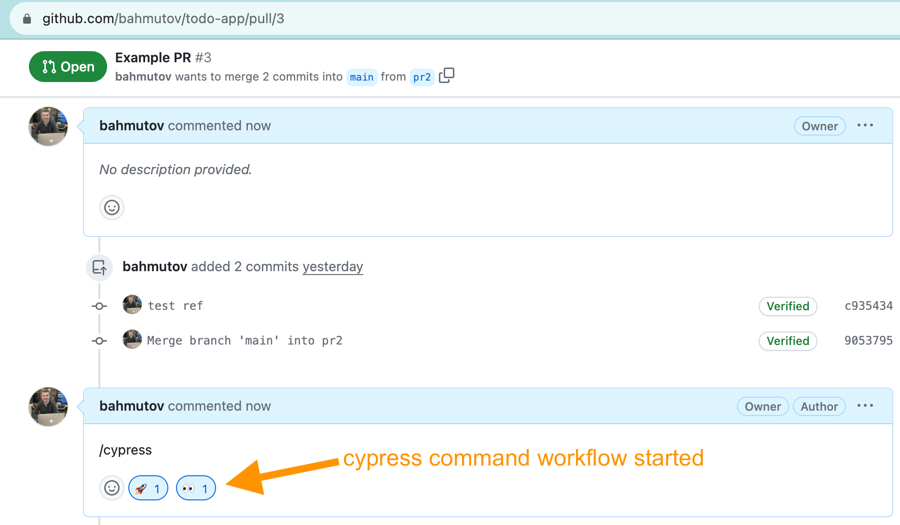
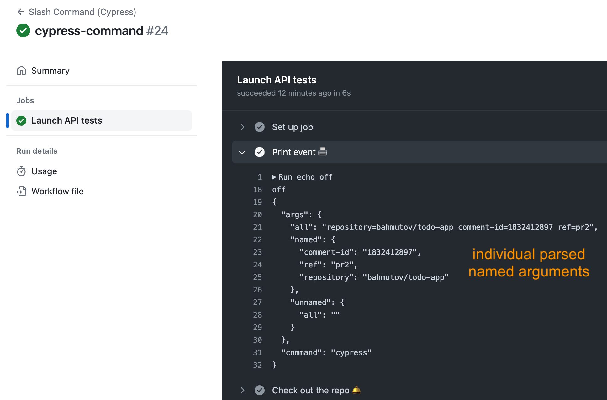
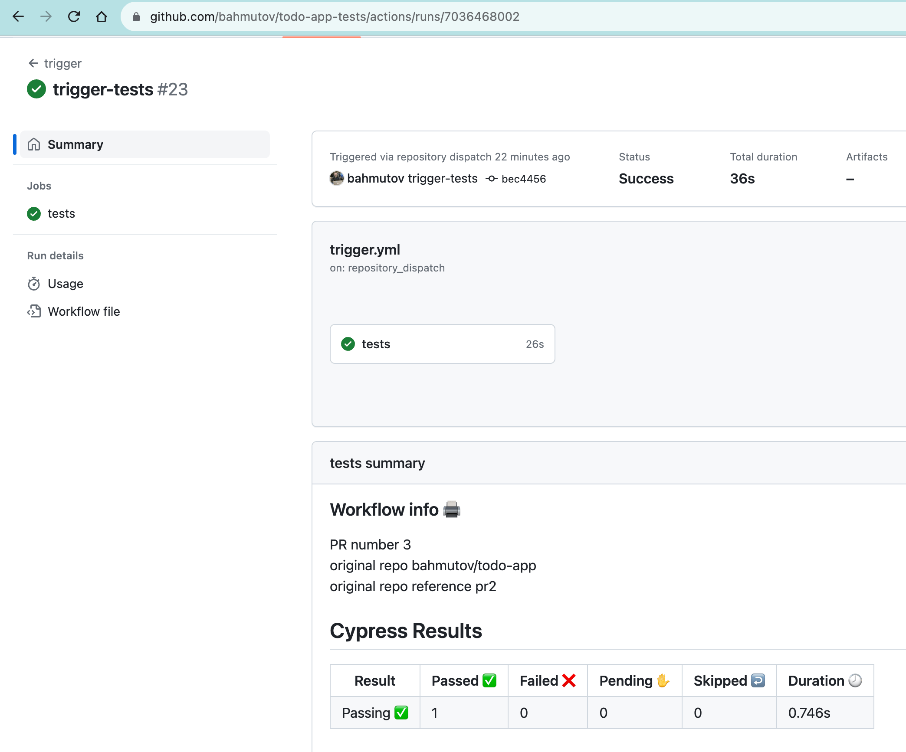
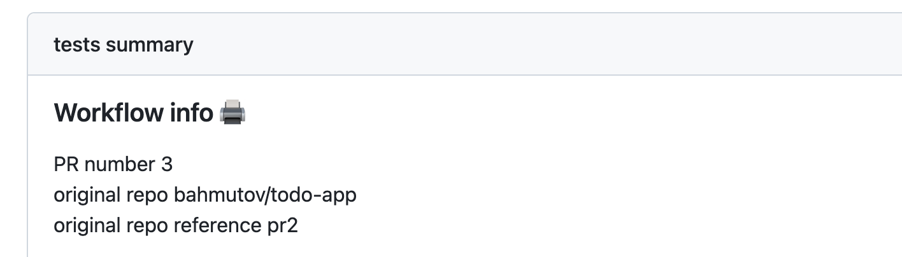
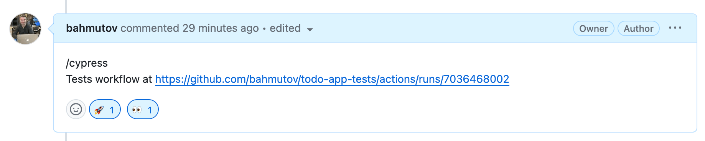
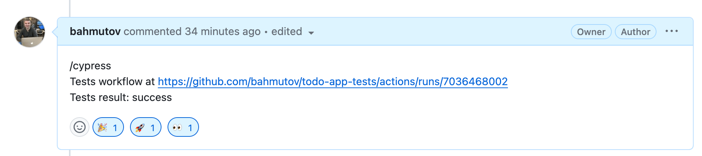

Separate Application And Tests Repos GitHub Actions Setup
How to trigger tests in a separate repo using slash command and pass the results back.
In my previous blog post How to Keep Cypress Tests in Another Repo While Using GitHub Actions I have described how the end-to-end tests can live in a separate repository from the web application. Keeping a separate tests repo comes with its advantages and challenges. I like using a separate tests repo when we want to iterate over the tests really quickly. In this blog post I will describe how I set up two repos using GitHub Actions. To summarize: every time we open a web app pull request, we can enter a new comment with the text /cypress and it will trigger a test run in the tests repo. The results of the test run will be posted back to the comment.
To trigger the test run, we will trust the developer who opened a pull request or is reviewing it to type a new comment /cypress. This is our "slash" command, and there is a reusable Github Action peter-evans/slash-command-dispatch that can handle it for us beautifully.
# a workflow that runs when a user enters a pull request comment # if the user enters "/cypress" we trigger the workflow "slash-command-cypress" name:SlashCommandDispatch
on: issue_comment: types: [created]
jobs: slash_command_dispatch: runs-on:ubuntu-latest steps: -name:Printevent🖨️ run:| echo off echo '${{ toJson(github.event) }}' # we only know the pull request number, like 12, 20, etc # but to trigger the workflow we need the branch name # use personal token to be able to query the branch by PR number # https://github.com/bahmutov/get-branch-name-by-pr -name:FindthePRbranchname🔎 uses:bahmutov/get-branch-name-by-pr@v1 id:pr with: repo-token:${{secrets.PERSONAL_TOKEN}} pr-id:${{github.event.issue.number}}
-name:SlashCommandDispatch # https://github.com/peter-evans/slash-command-dispatch uses:peter-evans/slash-command-dispatch@v3 with: # use personal token to be able to trigger more workflows token:${{secrets.PERSONAL_TOKEN}} # the personal token to post the comment emoji reaction-token:${{secrets.PERSONAL_TOKEN}} permission:none static-args:| repository=${{ github.repository }} comment-id=${{ github.event.comment.id }} ref=${{ steps.pr.outputs.branch }} commands:| cypress
It runs on every new issue and pull request comment
1 2 3
on: issue_comment: types: [created]
It grabs the branch name using my GitHub Action bahmutov/get-branch-name-by-pr because we will need to check out the code when running the test. We need to use a GitHub personal access token set as a repo secret.
1 2 3 4 5 6 7 8 9 10
# we only know the pull request number, like 12, 20, etc # but to trigger the workflow we need the branch name # use personal token to be able to query the branch by PR number # https://github.com/bahmutov/get-branch-name-by-pr -name:FindthePRbranchname🔎 uses:bahmutov/get-branch-name-by-pr@v1 id:pr with: repo-token:${{secrets.PERSONAL_TOKEN}} pr-id:${{github.event.issue.number}}
Similarly, we use the personal token to trigger the specific workflow for the "cypress" command
1 2 3 4 5 6 7 8 9 10 11 12 13 14 15
-name:SlashCommandDispatch # https://github.com/peter-evans/slash-command-dispatch uses:peter-evans/slash-command-dispatch@v3 with: # use personal token to be able to trigger more workflows token:${{secrets.PERSONAL_TOKEN}} # the personal token to post the comment emoji reaction-token:${{secrets.PERSONAL_TOKEN}} permission:none static-args:| repository=${{ github.repository }} comment-id=${{ github.event.comment.id }} ref=${{ steps.pr.outputs.branch }} commands:| cypress
You can have multiple commands dispatched by this workflow, and they can even parse arguments. For example, I could trigger Cypress tests run against a new pull request, or measure its performance using /lighthouse command, following the blog post Trying Lighthouse.
1 2 3
commands:| cypress lighthouse
Ok, so let's trigger the Cypress command workflow. The dispatch workflow adds the comment id and triggers the actual slash-command-cypress.yml workflow

If the workflow is found, the dispatch immediately adds two emoji reactions to the comment.

Todo-app: Cypress workflow
We are still in the "todo-app" repository. We triggered the slash-command-cypress.yml workflow. You can find the current YAML code in slash-command-cypress.yml and below:
# this workflow runs when the user comments "/cypress" on a pull request name:SlashCommand(Cypress)
on: repository_dispatch: types: [cypress-command]
permissions: contents:read pull-requests:write
jobs: launc-tests: name:LaunchAPItests runs-on:ubuntu-latest steps: -name:Printevent🖨️ run:| echo off echo '${{ toJson(github.event.client_payload.slash_command) }}' -name:Checkouttherepo🛎️ # https://github.com/actions/checkout uses:actions/checkout@v4 with: # only check out one JS file # that we use to trigger workflow in the tests repo sparse-checkout:| .github/workflows/trigger-cypress.js sparse-checkout-cone-mode:false
-name:TriggerCypressrun # https://github.com/actions/github-script uses:actions/github-script@v6 id:trigger # pass this repo's name and PR number # plus the comment ID so the tests workflow can post results back env: REPO_NAME:${{github.event.client_payload.slash_command.args.named.repository}} PR_NUMBER:${{github.event.client_payload.pull_request.number}} REF:${{github.event.client_payload.slash_command.args.named.ref}} FEEDBACK_COMMENT_ID:${{github.event.client_payload.github.payload.comment.id}} with: # unfortunately we need to use a personal token to trigger # a workflow in another repo, cannot use just GITHUB_TOKEN github-token:${{secrets.PERSONAL_TOKEN}} script:| const result = await require('./.github/workflows/trigger-cypress.js')({ github, core }); return result;
Let me explain what the workflow is doing step by step.
The workflow runs when triggered by the GitHub API with repository_dispatch event and type=cypress-command
1 2 3
on: repository_dispatch: types: [cypress-command]
This workflow needs to trigger a new run in another repo "bahmutov/todo-app-tests". A simple way to call GitHub API is to use the GitHub's own action actions/github-script. Since I put some logic into a Node.js script, which I will show in a second, I need to check out just the file .github/workflows/trigger-cypress.js. This is the sparse checkout step:
1 2 3 4 5 6 7 8 9
-name:Checkouttherepo🛎️ # https://github.com/actions/checkout uses:actions/checkout@v4 with: # only check out one JS file # that we use to trigger workflow in the tests repo sparse-checkout:| .github/workflows/trigger-cypress.js sparse-checkout-cone-mode:false
Now let's see what the dispatch workflow sent us in the payload. I am printing the object first
1 2 3 4
-name:Printevent🖨️ run:| echo off echo '${{ toJson(github.event.client_payload.slash_command) }}'
For our run, it shows:

Great, so if we want to grab individual arguments, like the name of the branch, we can use expression to get the nested property ${{ github.event.client_payload.slash_command.args.named.ref }}. We now call the script trigger-cypress.js and pass the individual values as environment variables:
1 2 3 4 5 6 7 8 9 10 11 12 13 14 15 16 17 18
-name:TriggerCypressrun # https://github.com/actions/github-script uses:actions/github-script@v6 id:trigger # pass this repo's name and PR number # plus the comment ID so the tests workflow can post results back env: REPO_NAME:${{github.event.client_payload.slash_command.args.named.repository}} PR_NUMBER:${{github.event.client_payload.pull_request.number}} REF:${{github.event.client_payload.slash_command.args.named.ref}} FEEDBACK_COMMENT_ID:${{github.event.client_payload.github.payload.comment.id}} with: # unfortunately we need to use a personal token to trigger # a workflow in another repo, cannot use just GITHUB_TOKEN github-token:${{secrets.PERSONAL_TOKEN}} script:| const result = await require('./.github/workflows/trigger-cypress.js')({ github, core }); return result;
Inside the script we can use GitHub wrapper objects that call the API methods using the personal token we passed.
Any external caller can trigger the tests run in our todo-app-tests repo by calling GitHub API and sending the repository_dispatch event with type trigger-tests. For details, see Run And Trigger GitHub Workflow blog post. Here is the full workflow .github/workflows/trigger.yml that receives this event.
name:trigger # run this workflow on trigger or manually on: # trigger this workflow by calling GitHub API repository_dispatch: types: [trigger-tests]
jobs: tests: runs-on:ubuntu-latest steps: -name:Printvariables🖨️ run:| echo '### Workflow info 🖨️' >> $GITHUB_STEP_SUMMARY echo 'PR number ${{ github.event.client_payload.pullRequestNumber }}' >> $GITHUB_STEP_SUMMARY echo 'original repo ${{ github.event.client_payload.repo }}' >> $GITHUB_STEP_SUMMARY echo 'original repo reference ${{ github.event.client_payload.ref }}' >> $GITHUB_STEP_SUMMARY # quickly post the workflow URL back in the original repo PR -name:PostworkflowURL🔗 if:${{github.event.client_payload.repo&&github.event.client_payload.feedbackCommentId}} # https://github.com/peter-evans/create-or-update-comment uses:peter-evans/create-or-update-comment@v3 with: # need a personal token to be able to post a comment back # in the original repo token:${{secrets.PERSONAL_TOKEN}} comment-id:${{github.event.client_payload.feedbackCommentId}} issue-number:${{github.event.client_payload.pullRequestNumber}} repository:${{github.event.client_payload.repo}} body:| Tests workflow at ${{ github.server_url }}/${{ github.repository }}/actions/runs/${{ github.run_id }} # check out both the app and the tests -name:Checkoutthisrepo🛎 uses:actions/checkout@v4
-name:Starttheapplication🎬 run:| cd app npm run start & -name:RunE2Etests🏃🏻♂️ id:tests uses:cypress-io/github-action@v6
-name:Postresults📨 if:${{always()&&github.event.client_payload.repo&&github.event.client_payload.feedbackCommentId}} uses:peter-evans/create-or-update-comment@v3 with: # need a personal token to be able to post a comment back # in the original repo token:${{secrets.PERSONAL_TOKEN}} comment-id:${{github.event.client_payload.feedbackCommentId}} issue-number:${{github.event.client_payload.pullRequestNumber}} repository:${{github.event.client_payload.repo}} body:| Tests result: ${{ steps.tests.outcome }} reactions:| ${{steps.tests.outcome=='success'&&'hooray'||'-1'}}
When we triggered the workflow using our /cypress comment, it finished successfully.

There are several things this workflow does to make it developer-friendly in two repos.
It posts the main information with the parameters it has received:
This is what you see right away in the workflow summary

Then it forms the browser URL to the workflow run that you see in the browser screenshot and appends it back to the original comment using the repo name and the comment id. It uses GitHub Action peter-evans/create-or-update-comment by the same person Peter Evans that wrote the slash comment dispatch action.
1 2 3 4 5 6 7 8 9 10 11 12 13 14
# quickly post the workflow URL back in the original repo PR -name:PostworkflowURL🔗 if:${{github.event.client_payload.repo&&github.event.client_payload.feedbackCommentId}} # https://github.com/peter-evans/create-or-update-comment uses:peter-evans/create-or-update-comment@v3 with: # need a personal token to be able to post a comment back # in the original repo token:${{secrets.PERSONAL_TOKEN}} comment-id:${{github.event.client_payload.feedbackCommentId}} issue-number:${{github.event.client_payload.pullRequestNumber}} repository:${{github.event.client_payload.repo}} body:| Testsworkflowat${{github.server_url}}/${{github.repository}}/actions/runs/${{github.run_id}}
If you are looking at the pull request in the "todo-app" repo, you will see the tests workflow that you can click.

Then we need to check out the tests, the application code, and start the application. We will check out the application code using the branch reference name passed to us using ref: ${{ github.event.client_payload.ref }} parameter.
I am assigning this step an id tests so that later we can refer to the outcome of the step. We want to post the result back in the original comment in the "todo-app" repository.
1 2 3 4 5 6 7 8 9 10 11 12 13 14
-name:Postresults📨 if:${{always()&&github.event.client_payload.repo&&github.event.client_payload.feedbackCommentId}} uses:peter-evans/create-or-update-comment@v3 with: # need a personal token to be able to post a comment back # in the original repo token:${{secrets.PERSONAL_TOKEN}} comment-id:${{github.event.client_payload.feedbackCommentId}} issue-number:${{github.event.client_payload.pullRequestNumber}} repository:${{github.event.client_payload.repo}} body:| Tests result: ${{ steps.tests.outcome }} reactions:| ${{steps.tests.outcome=='success'&&'hooray'||'-1'}}
The steps.tests.outcome can be "success", "failure", "cancelled", or "skipped". We are only interested in the "success" vs the others. In our case, the step succeeded, and thus we see in the comment the final status

Nice, this pull request is passing its tests.
In the next blog post I will describe how you can post a commit status back in the original repo. This way you can protected the branch and require the tests to pass before merging pull requests. Read the blog post Set Commit Status In Another Repo.